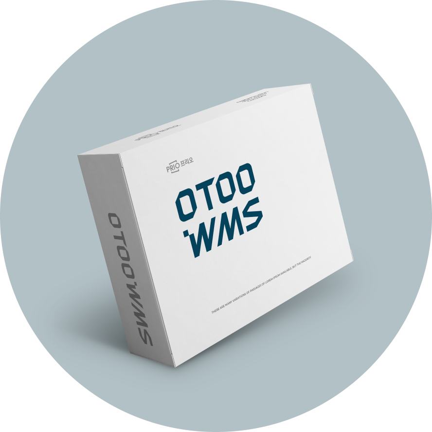
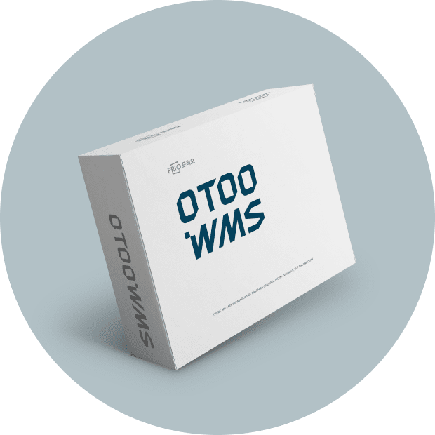
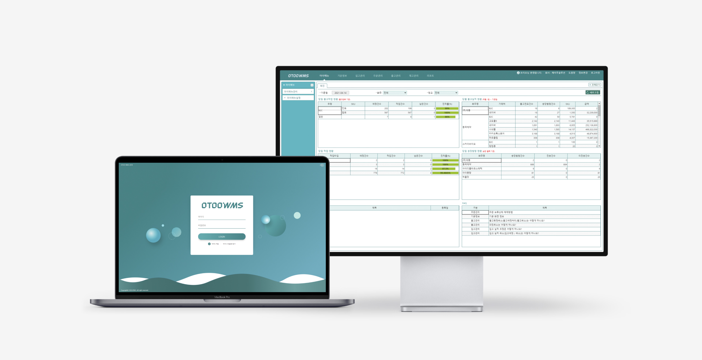
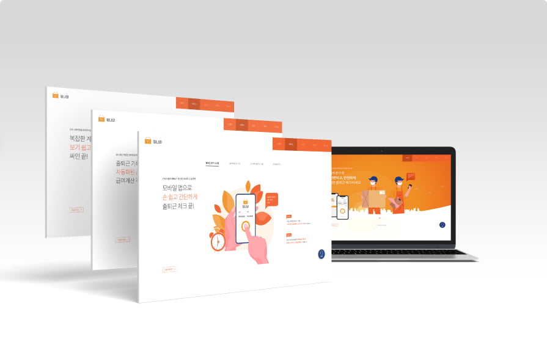
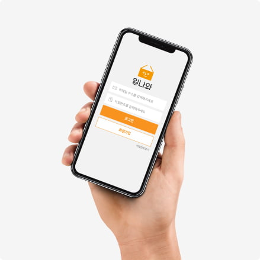
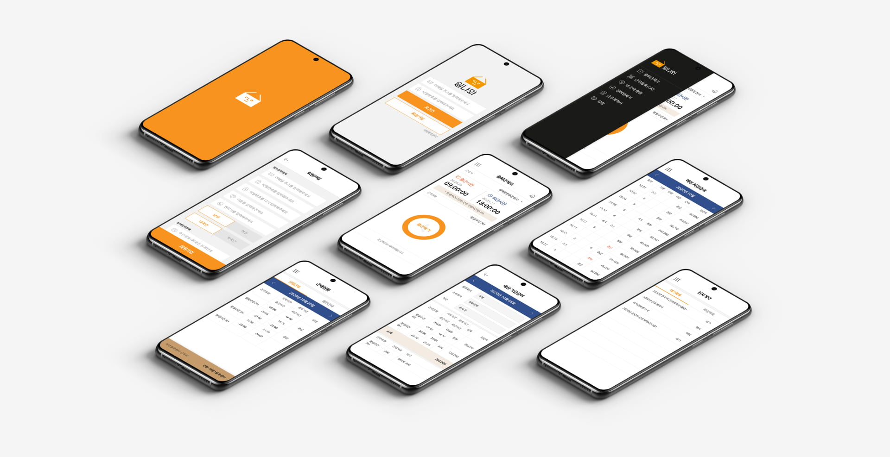

제품
기업의 지속 성장에 핵심인 SCM의 End-to-End 서비스를
지원하는 프리오는 성장의 동반자가 되기 위하여 항상 3S를
실천하기
위한 노력하고 있습니다.

SaaS OTOO WMS는 중소 이커머스 기업과 물류기업에서 사용할 수 있도록 표준화된
창고업무 기반에 다양한 기능이 탑재된 물류/WMS 솔루션으로 물류업무 경험이 없는
사용자도 별도의 교육 없이 쉽고 간편하게 사용할 수 있도록 설계되어 있습니다.
- 1환경설정 : 시스템정보, 리포트설정 (입고지시서, 피킹지시서, 택배송장 출력양식), 공통관리, 권한관리, 이력조회
- 2기준정보 : 사용자, 화주, 창고, 로케이션, 품목분류, 품목, 품목별X로케이션
- 3입고관리 : 입고처리, 지시서발행, 입고실적라벨, 입고현황
- 4주문관리 : 주문서양식설정, 주문등록, 주문엑셀업로드, 주문확정, 주문현황
- 5출고관리 : 출고처리, 피킹지시서발행, 송장업로드, 송장관리, 출고검수, 출고확정, 송장조회, 출고현황
- 6재고관리 : 로케이션이동, 로트속성변경, 재고실사, 재고조정, 재고조회, 일별재고조회, 품목별재고이력조회


- 1복수거점 (센터/창고) 통합운영
- 2화주단위 입고적치, 출고할당, 보충규칙을 관리
- 3재고상태와 작업 상태를 체계적으로 관리
- 4작업진척 상태 및 작업근거를 관리
- 5유통기한일, 제조일, 입고실적일 등에 의한 선입선출관리
- 6유통가공, 조립/해체관리
- 7로케이션 운영방식 설정가능
- 8사용자별 암호화된 비밀번호 및 접속로그 관리
- 9사용자별 UI 그리드 항목, 위치, 사이즈 조정관리
- 10권한별 화면제어 및 화면등록, 수정, 삭제 권한관리
- 11표준 PDA시스템 관리
- 1물류현장마다 특징이 있는 운영을 규칙화하여 대응합니다.
- 2작업 상태를 실시간으로 관리하여 취소등의 불규칙적 처리 시 일관되게 대응합니다.
- 3작업 상황, 재고상황을 실시간 파악, 지연 누락등을 모니터링하고 조기에 필요한 작업을 실행합니다.
정액제 요금과 사용한 만큼 지불하는 종량제 요금을 제공합니다.

일나와로 한번에
일나와는 물류현장의 수기 관리되는 출퇴근 기록을 앱을 통해 간편하게 기록할 수 있습니다. 또한 도급 인력을 사용하는 회사에서 사용할 수 있도록 표준화된 근태업무 프로세스 기반에 다양한 기능이 탑재된 근태관리 솔루션입니다. 별도교육 없이 쉽고 간편하게 사용할 수 있도록 설계되어 있습니다.
어떻게 하고 계신가요?
- 1사용현황 및 비용
-
2기준정보 - 계약업체설정, 근무처설정, 근무처직원관리,
근태관리자 권한설정
- 근무유형등록, 직군등록, 그룹관리, 메뉴관리 -
3근태관리 - 업무배정, 연장근무관리, 근태조정
- 월간배정현황, 월간 근무계획, 월간 근무현황/사용자별, 당일 근태현황 -
4급여관리 - 기준급여관리, 급여조정
- 근태마감현황, 월간마감현황, 노무비 지급현황 -
5근로계약관리
- 회사별 양식관리, 근로계약서관리, 직인등록 - 6게시판 푸시 알림기능
- 7레포트 – 월간근무현황, 월간근무시간

손쉽게 사용할 수 있는
근로자 앱
- 1출퇴근 체크 - 출근하기 및 퇴근하기 기능으로 사용자의 근태처리 하는 기능
- 2근무지 등록(사용자 QR) - 사용자정보 기반으로 QR표시기능, 근무지배정 등록기능
- 3근무지 등록(관리자 QR) - 근무지 선택 후 사용자QR 등록
- 4근무스케줄 등록(관리자 QR) - 근무일자, 근무지, 근무유형, 직군 선택 후 사용자QR 등록
- 5월간근무계획 – 개인별 월간 근무계획(근무유형, 직무)을 조회하는 기능
- 6내 근태현황 (일간/월간) - 개인별 일별/월별 근태현황을 조회하는 기능
- 7급여명세서 – 근무처별 일 마감시 일별(기본, 연장, 야간, 조기출근) 지급액 조회하는 기능
- 8근로계약서(동의) - 관리자 웹 시스템에서 발송된 근로계약서 확인 후, 정정요청 또는 승인완료
- 9설정 – 사용자의 개인정보를 조회하고 수정하는 기능
신뢰도 높은 서비스를 제공합니다

최적화된 일나와
-
1근태관리 주요특징
- 일, 주간, 월간 단위 인원에 대한 근무배정은 등록한 근무유형(평일8시간..)에 따라 배정한다.
- 연장, 야간, 조기출근 근무배정은 30분단위 쿠폰개념 등록할 수 있다.
- 연장, 야간, 조기출근 근무배정은 일별 시간을 지정해 등록할 수 있다.
- 근태현황 보고서는 변동된 근무일정 시간을 전체적으로 확인할 수 있다.
- 근태조정은 근무장소별 직원관리 인력에 대해 출퇴근, 연장근무에 대해 조정할 수 있다.
- 직군이 필수인 경우에는 근무처직원관리에 근무장소별 직원에 대해 직군을 설정할 수 있다.
- 다양한 사용기업 환경에 맞는 근무관리 프로세스를 설정할 수 있다.
- 사용기업의 멀티도급사, 멀티근무장소를 통합하여 근로자 통합운영할 수 있다.
-
2임금정산 주요특징
- 임금 단가는 직군별 평일/휴일에 따라 조기출근, 기본, 연장, 야간, 차감(공제시간), 식대차감 단가를 등록할 수 있다.
- 임금 단가는 분 단위로 산정할 수 있다.
- 급여조정은 근무장소별 직원관리 인력에 대해 조정사유를 입력 후 급여를 조정할 수 있다.
- 일별 근태마감 처리후, 개인별 근무장소, 근무일, 근무시간, 지급금액을 근로자 앱을 통해 제공한다.
-
3전자근로계약 주요특징
- 사용기업과 근로자간 근로계약서를 앱을 통해 비대면 서명으로 체결할 수 있다.
- 사용기업이 별도비용 없이 일정기간 전자근로계약서를 보관 관리할 수 있다.